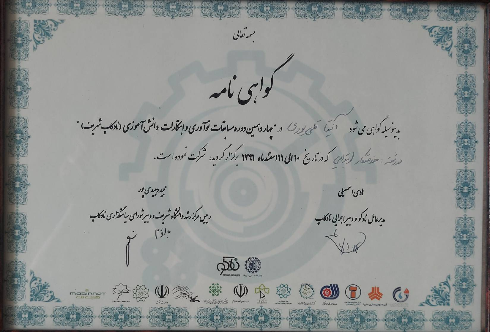

Achievement Details
Event
14th NADCup Sharif Competition
Organizer
Sharif University of Technology
Category
Service Robot
Achievement
5th Place – National Ranking
Date
10–11 Esfand 1391 (February–March 2013)
About this Achievement
I participated in the 14th NADCup Sharif Competition in the Service Robot category and achieved 5th place nationally. Competing in a major robotics event at a young age was challenging and stressful, but it taught me how to prepare for important competitions, manage pressure, and perform effectively in challenging situations. Being one of the youngest participants and achieving a top-five national ranking gave me valuable early experience in competitive technical events.
Key Takeaways
- National Robotics Competition Experience
- 5th Place National Ranking
- Competition Preparation
- Performing Under Pressure
- Problem Solving in Robotics
- Early Technical & Competitive Experience
Verification
View the official competition information:
The certificate documents my 5th-place national ranking in the 14th NADCup Sharif Competition.
Visit Sharif University →